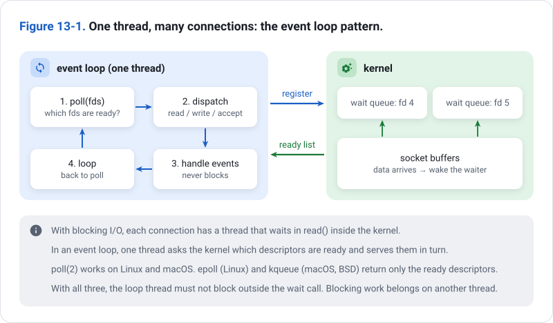

13. I/O Multiplexing and the Event Loop
The central engineering challenge of high-concurrency network servers is sustaining tens of thousands of simultaneous client connections when the vast majority remain idle waiting for network packets at any given instant. Choosing between a thread-per-connection architecture and an event-driven I/O multiplexing loop directly governs memory consumption, cache locality, and scheduler overhead.
13.1 The Scalability Limits of Thread-Per-Connection
Assigning one operating-system thread to every accepted TCP connection allows handlers to be written as straightforward sequential blocking code (read(), process, write()). While intuitive for low-concurrency services, this model encounters three scaling ceilings as connection counts grow into the tens of thousands:
- Per-thread stack footprint: Each OS thread reserves a dedicated user-space stack (commonly 1 to 8 MiB of virtual space and tens of kilobytes of resident pages) plus a kernel stack (8 to 16 KiB) and scheduling metadata.
- Context-switch and TLB overhead: Waking thousands of threads across bursts of short packets triggers frequent kernel scheduler invocations, register-state saves, and L1/L2 cache eviction.
- Lock contention: Sharing mutable session tables or metrics across thousands of concurrent threads introduces heavy synchronization overhead.
13.2 Event-Driven Architecture and I/O Multiplexing
An event-driven server decouples connection count from thread count by running a single-threaded (or one-thread-per-core) event loop over an I/O multiplexing system call (poll, Linux epoll, or BSD/Darwin kqueue). Rather than blocking a dedicated thread on one socket, the loop registers every active file descriptor with the kernel and sleeps once until any descriptor becomes ready:
- Wait (Observation): The loop invokes
poll()(orepoll_wait()/kevent()), suspending the thread until one or more monitored sockets transition to a ready state (an incoming TCP connection waiting on the listening socket, readable bytes in a client receive buffer, or an error/hangup) or a timeout expires. - Dispatch: The loop inspects the ready descriptors reported by the kernel and routes each event to its connection state machine.
- Non-blocking Execution: Each handler consumes or emits available bytes and returns promptly to the loop. Because one thread services all connections, a blocking disk read or expensive CPU computation inside a handler stalls every other client until it returns; production event loops offload blocking work to dedicated thread pools.

13.2.1 Socket Setup, struct sockaddr_in, and the poll(2) System Call Interface
Listings 13-1 through 13-4 build a complete single-threaded TCP echo server and client using the BSD socket API paired with poll(2). Understanding the exact data structures, byte-order conversions, and return contracts makes every line transparent:
struct sockaddr_in {
sa_family_t sin_family; // Address family: AF_INET (IPv4)
in_port_t sin_port; // 16-bit TCP/UDP port in network byte order (htons)
struct in_addr sin_addr; // 32-bit IPv4 address in network byte order (htonl)
unsigned char sin_zero[8];// Zero padding to match generic struct sockaddr size
};
struct pollfd {
int fd; // File descriptor to monitor (negative entries are ignored)
short events; // Input bitmask: events the application asks the kernel to watch
short revents; // Output bitmask: events the kernel detected on return
};
int socket(int domain, int type, int protocol);
int setsockopt(int sockfd, int level, int optname, const void *optval, socklen_t optlen);
int bind(int sockfd, const struct sockaddr *addr, socklen_t addrlen);
int listen(int sockfd, int backlog);
int accept(int sockfd, struct sockaddr *addr, socklen_t *addrlen);
int connect(int sockfd, const struct sockaddr *addr, socklen_t addrlen);
int poll(struct pollfd *fds, nfds_t nfds, int timeout);
- Network Byte Order (
htons/htonl): Internet protocols transmit multi-byte integers in big-endian (most significant byte first) network byte order, whereas x86-64 and ARM64 processors are little-endian. Callinghtons(45678)(“host to network short”, 16-bit) andhtonl(INADDR_LOOPBACK)(“host to network long”, 32-bit, converting127.0.0.1=0x7F000001) converts fields insidestruct sockaddr_ininto canonical wire order before passing the struct to the kernel. - Polymorphic
struct sockaddr *casts: Becausebind(),connect(), andaccept()serve IPv4 (sockaddr_in), IPv6 (sockaddr_in6), and Unix domain (sockaddr_un) addresses through one C interface, callers cast the concrete address pointer tostruct sockaddr *and pass its exact byte size (sizeof addr) inaddrlen. socket(domain, type, protocol): Creates an unbound kernel socket endpoint and returns a file descriptor (>= 0), or-1on error (EMFILE,EAFNOSUPPORT). Passing(AF_INET, SOCK_STREAM, 0)selects IPv4 (AF_INET), reliable connection-oriented byte stream (SOCK_STREAM), and the default stream protocol (TCP,0).setsockopt(ls, SOL_SOCKET, SO_REUSEADDR, &one, sizeof one): Configures socket-layer options (SOL_SOCKET). When a TCP server exits with active connections, the kernel holds the old(IP, port)tuple in TCPTIME_WAITstate for 30 to 120 seconds to absorb delayed network packets. WithoutSO_REUSEADDRset to non-zero (one = 1), immediately restarting the server on port45678fails insidebind()withEADDRINUSE. Returns0on success or-1on error.bind(ls, addr, addrlen): Associates the local IP address and port inaddrwith socketls. Returns0on success or-1(EADDRINUSE,EACCESfor privileged ports< 1024).listen(ls, backlog): Markslsas a passive listening socket capable of accepting incoming TCP handshakes. Thebacklogparameter (8in Listing 13-1) bounds the length of the kernel’s completed-connection queue awaitingaccept(). Returns0on success or-1.accept(ls, addr, addrlen): Dequeues one completed client connection fromls’s accept queue and allocates a new, distinct connected file descriptor (c >= 0) dedicated to that client, leavinglsopen and listening for future clients. Passingnullptr, nullptrfor(addr, addrlen)discards the peer’s IP/port metadata. Returns-1on error (EINTR,EAGAIN,EMFILE).connect(fd, addr, addrlen): Used by the client (Listing 13-2) to initiate the TCP three-way handshake (SYN,SYN-ACK,ACK) toward the server address inaddr. Returns0once established, or-1(ECONNREFUSEDif no server is listening,ETIMEDOUTon network timeout).poll(fds, nfds, timeout): Monitors the arrayfdsofnfdsstruct pollfdentries simultaneously.- Before calling
poll(), the application setsfds[i].fdandfds[i].events(typicallyPOLLINto detect readable client bytes, peer EOF, or a newly queued connection ready foraccept()on the listening socketls). timeoutspecifies the maximum blocking interval in milliseconds (1000ms in Listing 13-1;-1blocks indefinitely;0returns immediately without blocking).- On return, the kernel overwrites
fds[i].reventsfor every entry (leavingeventsuntouched) with the subset of conditions actually observed:POLLIN(data or EOF ready to read),POLLOUT(send buffer writable), and output-only flagsPOLLHUP(peer closed connection),POLLERR(asynchronous socket error), orPOLLNVAL(descriptor is not open). - Return value: Returns the count (
> 0) of entries with non-zerorevents,0iftimeoutelapsed with zero ready descriptors, or-1on error (EINTRif interrupted by a signal,ENOMEM). Whenfds[i].revents & POLLINfires on a client socket andread()returns0, the client has closed its write half cleanly (TCPFIN), so the server closes the descriptor and erases it fromfds.
- Before calling
Listing 13-1. An echo server with one thread and poll (C++20).
// ch13/poll_echo_server.cpp: one thread, several clients, poll(2).
// Serves two clients, then exits; the harness starts it and runs two clients.
#include <arpa/inet.h>
#include <netinet/in.h>
#include <poll.h>
#include <sys/socket.h>
#include <unistd.h>
#include <cstdio>
#include <vector>
int main() {
int ls = socket(AF_INET, SOCK_STREAM, 0);
if (ls < 0) {
perror("socket");
return 1;
}
int one = 1;
setsockopt(ls, SOL_SOCKET, SO_REUSEADDR, &one, sizeof one);
sockaddr_in addr{};
addr.sin_family = AF_INET;
addr.sin_port = htons(45678);
addr.sin_addr.s_addr = htonl(INADDR_LOOPBACK);
if (bind(ls, reinterpret_cast<sockaddr*>(&addr), sizeof addr) != 0) {
perror("bind");
return 1;
}
listen(ls, 8);
printf("listening on 127.0.0.1:45678\n");
std::vector<pollfd> fds{{ls, POLLIN, 0}};
int clients_served = 0;
while (clients_served < 2) {
int rc = poll(fds.data(), fds.size(), 1000);
if (rc < 0) {
perror("poll");
return 1;
}
for (size_t i = 0; i < fds.size(); ++i) {
if (!(fds[i].revents & POLLIN)) continue;
if (fds[i].fd == ls) {
int c = accept(ls, nullptr, nullptr);
printf("accepted fd %d\n", c);
fds.push_back({c, POLLIN, 0});
} else {
char buf[256];
ssize_t n = read(fds[i].fd, buf, sizeof buf - 1);
if (n <= 0) {
printf("client fd %d closed\n", fds[i].fd);
close(fds[i].fd);
fds.erase(fds.begin() + i);
--i;
++clients_served;
} else {
buf[n] = 0;
printf("echoing %zd bytes to fd %d\n", n, fds[i].fd);
write(fds[i].fd, buf, n);
}
}
}
}
printf("served 2 clients, exiting\n");
close(ls);
}
Listing 13-2. The C++20 echo client.
// ch13/echo_client.cpp: connect, send three messages, verify the echoes.
#include <arpa/inet.h>
#include <netinet/in.h>
#include <sys/socket.h>
#include <unistd.h>
#include <cstdio>
#include <cstring>
int main() {
int fd = socket(AF_INET, SOCK_STREAM, 0);
if (fd < 0) {
perror("socket");
return 1;
}
sockaddr_in addr{};
addr.sin_family = AF_INET;
addr.sin_port = htons(45678);
addr.sin_addr.s_addr = htonl(INADDR_LOOPBACK);
if (connect(fd, reinterpret_cast<sockaddr*>(&addr), sizeof addr) != 0) {
perror("connect");
return 1;
}
const char* msgs[] = {"one", "two", "three"};
for (const char* m : msgs) {
write(fd, m, strlen(m));
char buf[64] = {};
read(fd, buf, sizeof buf - 1);
printf("sent \"%s\", got \"%s\" (%s)\n", m, buf,
strcmp(m, buf) == 0 ? "ok" : "MISMATCH");
}
close(fd);
}
Output 13-1. The log of the C++20 server.
listening on 127.0.0.1:45678
accepted fd 4
echoing 3 bytes to fd 4
echoing 3 bytes to fd 4
echoing 5 bytes to fd 4
client fd 4 closed
accepted fd 4
echoing 3 bytes to fd 4
echoing 3 bytes to fd 4
echoing 5 bytes to fd 4
client fd 4 closed
served 2 clients, exiting
Output 13-2. The first C++20 client run. The second run prints the same lines.
sent "one", got "one" (ok)
sent "two", got "two" (ok)
sent "three", got "three" (ok)
Listing 13-3. The same single-threaded poll echo server in Rust.
// ch13/poll_echo_server.rs: one thread, several clients, poll(2) in Rust.
extern crate libc;
use std::io::{Read, Write};
use std::net::TcpListener;
use std::os::fd::AsRawFd;
fn main() {
let listener = TcpListener::bind("127.0.0.1:45679").expect("bind failed");
println!("listening on 127.0.0.1:45679");
let listen_fd = listener.as_raw_fd();
let mut fds = vec![libc::pollfd {
fd: listen_fd,
events: libc::POLLIN,
revents: 0,
}];
let mut streams = Vec::new();
let mut clients_served = 0;
while clients_served < 2 {
// SAFETY: `fds` is a valid contiguous `Vec<libc::pollfd>` whose descriptors
// are owned by `listener` and `streams` for the duration of the loop.
let rc = unsafe { libc::poll(fds.as_mut_ptr(), fds.len() as libc::nfds_t, 1000) };
assert!(rc >= 0, "poll failed");
if (fds[0].revents & libc::POLLIN) != 0 {
let (stream, _) = listener.accept().expect("accept failed");
let cfd = stream.as_raw_fd();
println!("accepted fd {cfd}");
fds.push(libc::pollfd {
fd: cfd,
events: libc::POLLIN,
revents: 0,
});
streams.push(stream);
}
let mut i = 0;
while i < streams.len() {
if (fds[i + 1].revents & libc::POLLIN) != 0 {
let cfd = fds[i + 1].fd;
let mut buf = [0_u8; 256];
let n = streams[i].read(&mut buf).unwrap_or(0);
if n == 0 {
println!("client fd {cfd} closed");
streams.remove(i);
fds.remove(i + 1);
clients_served += 1;
continue;
}
println!("echoing {n} bytes to fd {cfd}");
streams[i].write_all(&buf[..n]).expect("write failed");
}
i += 1;
}
}
println!("served 2 clients, exiting");
}Listing 13-4. The Rust echo client.
// ch13/echo_client.rs: connect, send three messages, verify the echoes.
use std::io::{Read, Write};
use std::net::TcpStream;
fn main() {
let mut stream = TcpStream::connect("127.0.0.1:45679").expect("connect failed");
for msg in ["one", "two", "three"] {
stream.write_all(msg.as_bytes()).expect("write failed");
let mut buf = [0_u8; 64];
let n = stream.read(&mut buf).expect("read failed");
let got = std::str::from_utf8(&buf[..n]).unwrap_or("");
let status = if got == msg { "ok" } else { "MISMATCH" };
println!("sent \"{msg}\", got \"{got}\" ({status})");
}
}Output 13-3. The log of the Rust poll server.
listening on 127.0.0.1:45679
accepted fd 4
echoing 3 bytes to fd 4
echoing 3 bytes to fd 4
echoing 5 bytes to fd 4
client fd 4 closed
accepted fd 4
echoing 3 bytes to fd 4
echoing 3 bytes to fd 4
echoing 5 bytes to fd 4
client fd 4 closed
served 2 clients, exiting
Output 13-4. The first Rust client run.
sent "one", got "one" (ok)
sent "two", got "two" (ok)
sent "three", got "three" (ok)
13.3 Complexity and Evolution of Multiplexing Primitives (select, poll, epoll, kqueue)
The scalability of an event loop depends directly on how the kernel tracks the monitored descriptor set across calls:
| Primitive | Platform | Descriptor Limit | Per-Wait Complexity | Kernel Registration Model |
|---|---|---|---|---|
select | POSIX | Fixed FD_SETSIZE (typically 1024) | O(max_fd) | Stateless; copies full bitmasks on every call |
poll | POSIX | Unbounded (dynamic pollfd[]) | O(N) | Stateless; copies and scans full fds array on every call |
epoll | Linux | Unbounded | O(K) ready events | Stateful kernel red-black tree (epoll_ctl) + O(1) ready list (epoll_wait) |
kqueue | macOS / BSD | Unbounded | O(K) ready events | Stateful kernel event table (kevent) unifying sockets, timers, files, and processes |
Both select and poll are stateless: on every iteration of the event loop, user space copies the entire array of N descriptors into Ring 0, the kernel walks all N descriptors to register wait-queue callbacks, and user space scans all N entries again on return to locate the K active sockets. When N = 50,000 connections and only K = 10 are active, O(N) scanning dominates CPU time.
Modern kernels eliminate this scan via stateful interest sets (epoll on Linux, kqueue on Darwin/BSD, and completion-based io_uring on Linux 5.1+). The application registers each socket once upon accept(); when packets arrive, the network interrupt handler appends that socket directly onto a kernel ready queue, reducing event retrieval from O(N) to O(K) where K is the number of ready sockets. Production runtimes including Nginx, Envoy, Node.js (libuv), and Rust’s Tokio are built atop these O(K) interfaces.
Listing 13-5. Contrast: a thread-per-connection echo server and client (Rust).
// ch13/thread_echo.rs: a thread-per-connection echo server plus its client,
// both in one process, written with the Rust standard library only.
use std::io::{Read, Write};
use std::net::{TcpListener, TcpStream};
use std::thread;
fn handle(mut s: TcpStream, id: usize) {
let mut buf = [0u8; 256];
loop {
match s.read(&mut buf) {
Ok(0) => break, // peer closed
Ok(n) => {
if let Err(e) = s.write_all(&buf[..n]) {
eprintln!("thread {id}: {e}");
break;
}
println!("thread {id} echoed {n} bytes");
}
Err(e) => {
eprintln!("thread {id}: {e}");
break;
}
}
}
}
fn main() -> Result<(), Box<dyn std::error::Error>> {
let listener = TcpListener::bind("127.0.0.1:45679")?;
println!("listening on 127.0.0.1:45679");
let server = thread::spawn(move || {
let mut id = 0;
for stream in listener.incoming() {
match stream {
Ok(s) => {
id += 1;
println!("accepted client {id}");
thread::spawn(move || handle(s, id));
}
Err(e) => {
eprintln!("accept: {e}");
break;
}
}
if id >= 2 {
break;
}
}
});
for c in 0..2 {
let mut s = TcpStream::connect("127.0.0.1:45679")?;
for m in ["alpha", "beta", "gamma"] {
s.write_all(m.as_bytes())?;
let mut buf = [0u8; 64];
let n = s.read(&mut buf)?;
let got = String::from_utf8_lossy(&buf[..n]);
println!("client {c} sent \"{m}\", got \"{got}\" (ok={})", got == m);
}
}
server.join().map_err(|_| "server thread panicked")?;
println!("done");
Ok(())
}Output 13-5.
listening on 127.0.0.1:45679
accepted client 1
thread 1 echoed 5 bytes
client 0 sent "alpha", got "alpha" (ok=true)
thread 1 echoed 4 bytes
client 0 sent "beta", got "beta" (ok=true)
thread 1 echoed 5 bytes
client 0 sent "gamma", got "gamma" (ok=true)
accepted client 2
thread 2 echoed 5 bytes
client 1 sent "alpha", got "alpha" (ok=true)
thread 2 echoed 4 bytes
client 1 sent "beta", got "beta" (ok=true)
thread 2 echoed 5 bytes
client 1 sent "gamma", got "gamma" (ok=true)
done